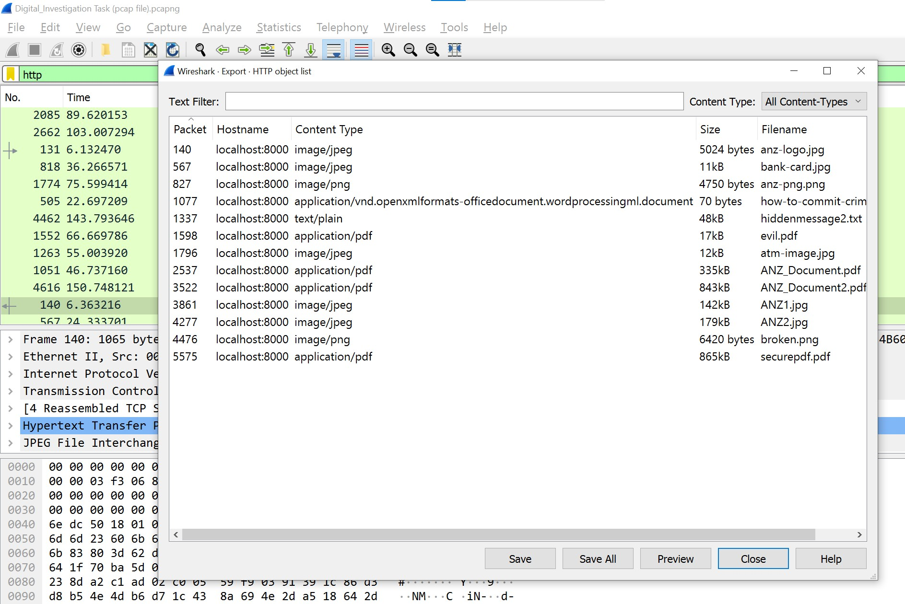
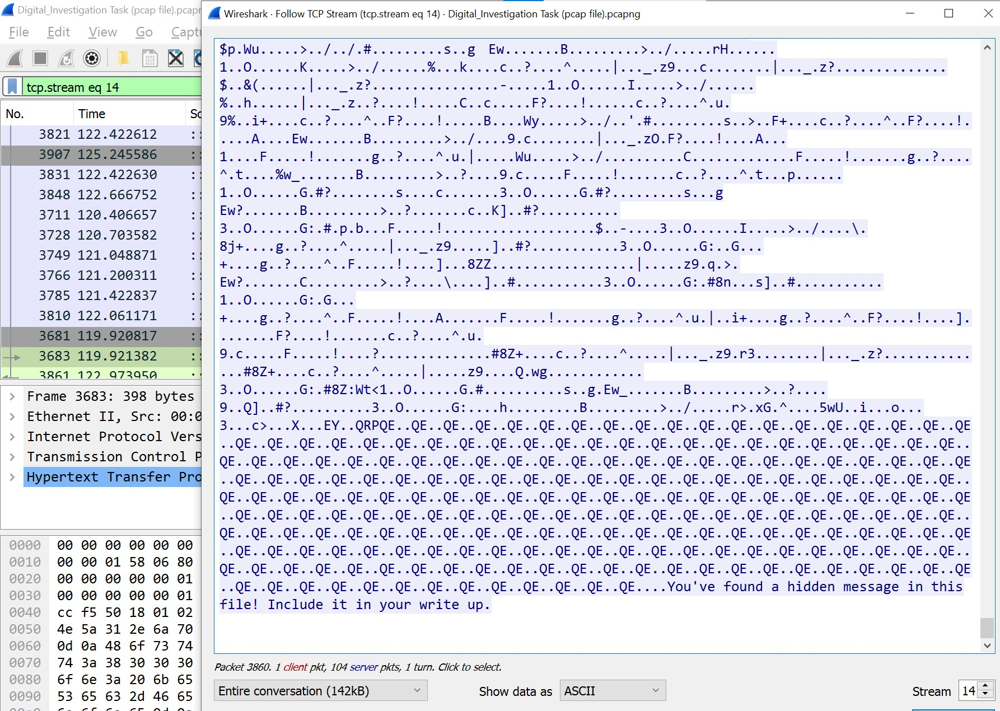
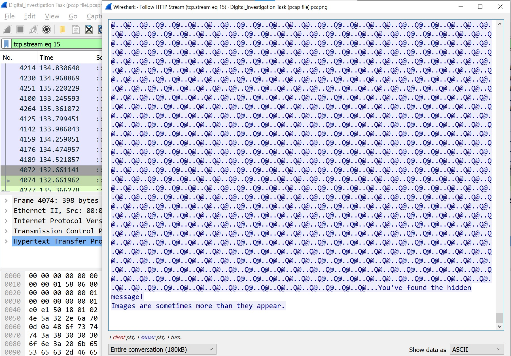
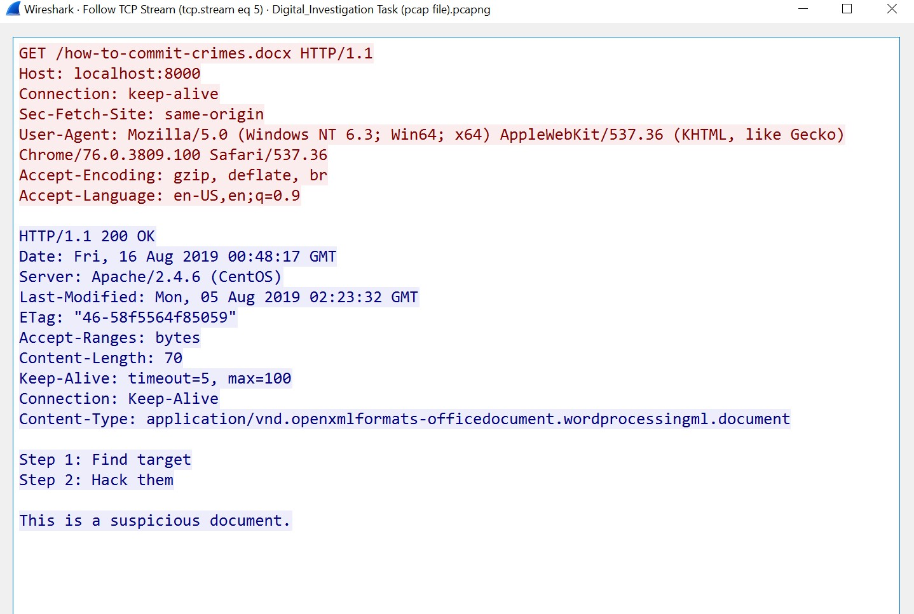
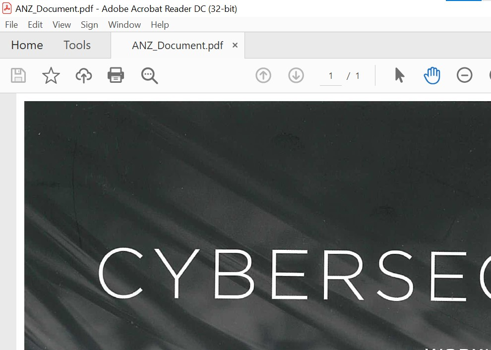
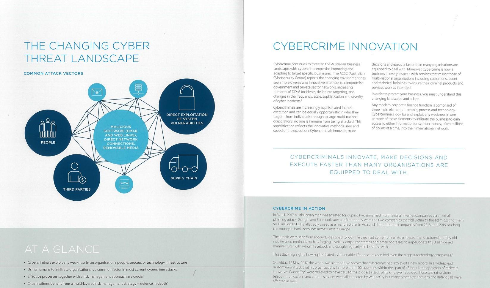
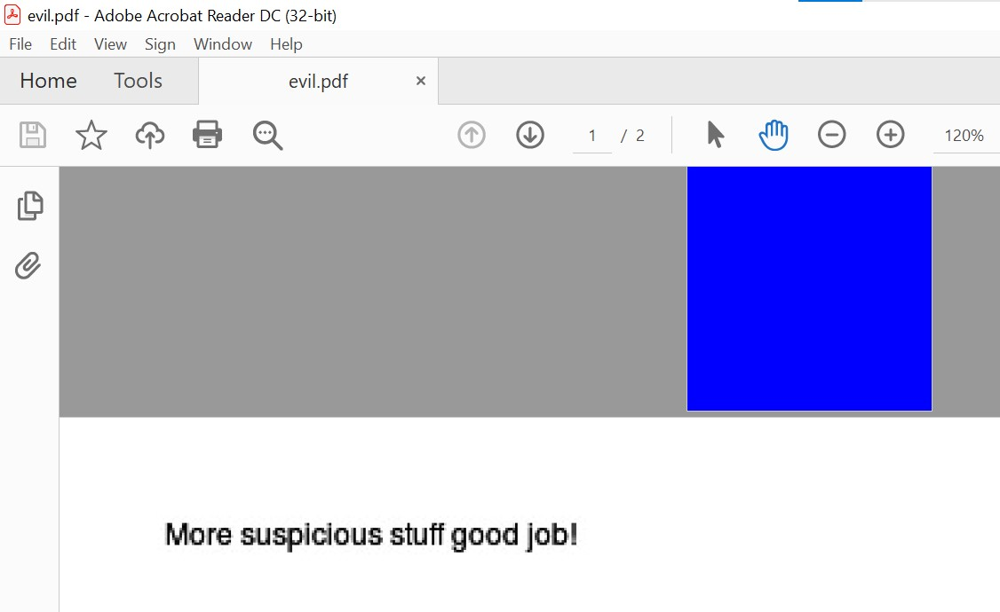
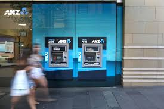
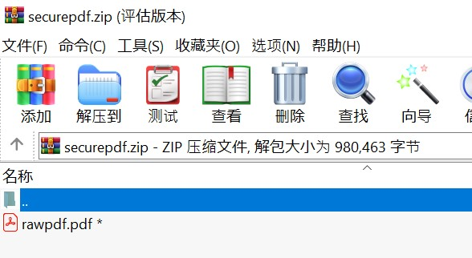

ANZ Internship - pcap Forensic by Wireshark
0x00 Program Requirements
You can find the program requirements on ANZ virtual internship program website, or you can simply see the file in my GH repo (Please do not use it in business intention): https://github.com/RdWeirdo981/Master-of-Cybersecurity/tree/main/anz
0x01 Sub-task 1
Task description
● anz-logo.jpg and bank-card.jpg are two images that show up in the users network traffic.
● Extract these images from the pcap file and attach them to your report.
ANS
Extract image file from pcap. We can filter the display type in Wireshark to simplify the process.
For this task, our filtration condition can be HTTP.
But we have an easier way to extract the files in HTTP request. We can choose File –> Export Objects –> HTTP to obtain all files transmitted by HTTP.
Thus, we can easily extract these 2 images.


Or we can use Hex Editor:
- jpg file signature: FFD8, footer: FFD9
- “Follow” –> “TCP Stream” –> Choose “Raw” view –> Save the raw stream from FFD8 to FFD9
- Copy it to the Hex Editor
- Save it as .jpg
0x02 Sub-task 2
Task description
• The network traffic for the images “ANZ1.jpg“ and “ANZ2.jpg“ is more than it appears.
• Extract the images, include them and mention what is different about them in your report.
ANS
Steps
- Right click the row of ANZ1.jpg / ANZ2.jpg
- Choose “Follow” –> “TCP stream”
- You will find the hidden message on the bottom of the streaming data


0x03 Sub-task 3
Task description
• The user downloaded a suspicious document called “how-to-commit-crimes.docx“
• Find the contents of this file and include it in your report.
ANS
Same steps as Task2.

0x04 Sub-task 4
Task description
• The user accessed 3 pdf documents: ANZ_Document.pdf, ANZ_Document2.pdf, evil.pdf
• Extract and view these documents. Include images of them in your report.
ANS
Same steps as Task1
Or we can use Hex Editor:
- pdf file signature: 25 50 44 46, no footer



0x05 Sub-task 5
Task description
• The user also accessed a file called “hiddenmessage2.txt“
• What is the contents of this file? Include it in your report
ANS
It’s a jpg hidden as txt. So using same technique in task 1, we got the file.

0x06 Sub-task 6
Task description
● The user accessed an image called “atm-image.jpg“
● Identify what is different about this traffic and include everything in your report.
ANS
If we use Raw mode to view the TCP traffic, we will find that there’s actually 2 FFD8 & 2 FFD9 in the stream, which means that this GET request actually obtained 2 images.
We put the Hex data into Editor and save them both to obtain the 2 images.

0x07 Sub-task 7
Task description
• The network traffic shows that the user accessed the image “broken.png“
• Extract and include the image in your report.
ANS
Analyzing the ASCII code in TCP stream, you can find that it’s actually encoded by base64.
So, 1stly, you have to decode the base64 stream into Hex code.
Then, since this is a png file, the file signature should be 89 50 4E 47 0D 0A 1A 0A.
Put it into Hex Editor, and save it to .png
0x08 Sub-task 8
Task description
● The user accessed one more document called securepdf.pdf
● Access this document and include an image of the pdf in your report. Detail the steps to access it.
ANS
As mentioned in Task 4, pdf file signature should be 25 50 44 46, no footer. But this stream doesn’t have this signature. Thus, it’s not a pdf.
There’s a password in the bottom of the stream, so we can guess it’s a compressed file.
Luckily, we found that this is a zip file because it contains 50 4B 03 04.
We saved it to a zip file and open it with the password.
We finally got the real pdf inside the compressed file.
